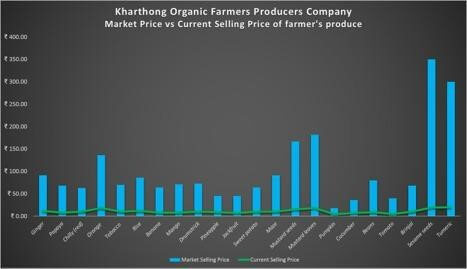
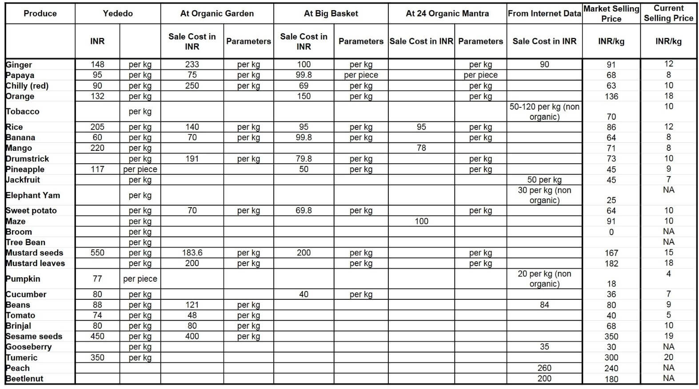
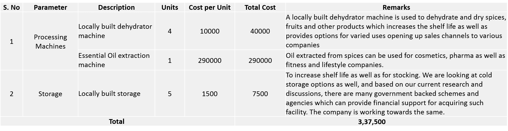
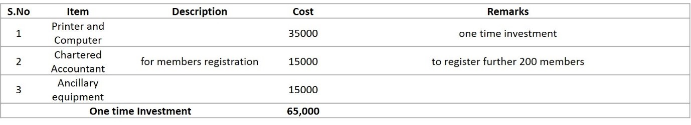
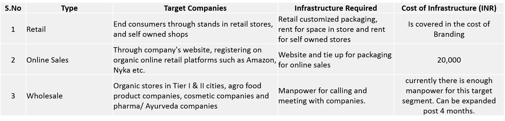
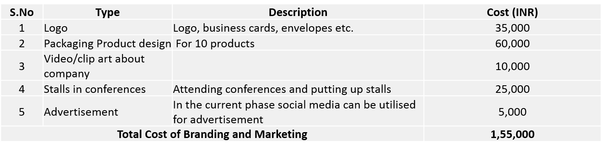

Kharthong Organic Farmers Producer Company
✤ Biate community is a largely ignored and obscure minority. They are an endangered community and there are only 15,000 - 20,000 Biate people in the world today. Most of the community resides on both sides of the Assam-Meghalaya border region with 17 villages in Assam and 25 on the Meghalaya side.

✤ While the community has been given recognition at district level, they are still struggling for recognition as a community by Assam state.
✤ Being a minority in a region with long history of tribal feudalism has its own disadvantages. In Dima Hasao district, all political representatives are from the tribe with the largest population. Hence, minority communities like the Biate and their areas have been largely ignored.

✤ Kharthong area still remains largely under developed with poor roads, and public facilities etc. The community primarily depends on growing organic products like ginger, turmeric, oranges, chillies, pumpkins, papayas, tobacco etc for sustenance. But due to poor rates offered to them by middle men and mandi agents they have been struggling to make ends meet and provide for educational, medical and other basic needs of their family.
✤ For example, organic ginger that can cost as high as 200/kg in organic stores is bought from the farmers by middle men at 10-20/kg. Poor economic conditions force people to compromise on essential things like proper healthcare, education, and nutrition for themselves and their families.
✤ Since lack of proper rates for their produce lies at the center of their woes and miseries, it is only logical to address this central/root problem in order to empower the community and improve their lives on various fronts. In order to address this issue, we have been working to establish an organic farmers producer company and guide the community to work towards unifying themselves in order to be able to receive fair rates for their produce.

Villagers packing and loading ginger to take it to a middle man.
✤ Forming such a company with an organic certification and connecting the company to proper organic buyers from across the country and world will gradually and surely uplift the community. Rest Of My Family will closely work with the community in a facilitating and guiding capacity till the company is deemed self-sufficient and capable of running and managing its own affairs.
✤ The community currently practices a traditional style organic Jhum cultivation growing a variety of vegetables, fruits, spices, rice etc. While they are happy with the yield that the land gives without even using organic manure, with expert guidance to practice organic and eco-friendly techniques, the yield can be greatly improved.
Forming a FPO with the farmers to enable sale of their organic produce.
- ✤ FPO registration and foundation of operating model
- ✤ Organic Certification for the produce
Farmers Producers Company (FPO):

✤ FPOs are based on the values of self-help, self- responsibility, democracy, equality, equity and solidarity. FPO members must believe in the ethical values of honesty, openness, social responsibility and caring for others
- 1st Principle: Voluntary and Open Membership
- 2nd Principle: Democratic Farmer Member Control
- 3rd Principle: Farmer-Member Economic Participation
- 4th Principle: Autonomy and Independence
- 5th Principle: Education, Training and Information
- 6th Principle: Co-operation among FPO structures.
- 7th Principle: Concern for the Community
Principles of FPOs:
Key Characteristics of FPOs:
Producers Company is formed with the equity contribution by the members. The day to day operation is expected to be managed by the professionals, hired from outside, under the direction of the Board of Directors (BoD) elected/selected by the General body of the Producer Company (PC) for a specific tenure.
Since farmers or the producers are the equity holders of the company, a PC as an organization provides an appropriate framework for owning the company by the producers themselves.
- (a) Backward linkage for inputs like seeds, organic fertilizers, credit, insurance, knowledge and extension services and
- (b) Forward linkages such as collective marketing, processing and market led agriculture production etc.
- (c) At the heart of this effort is to gain collective bargaining power for small farmers/ producers.
The basic purpose of the PC is to unify small farmers or producers for
Snapshot of Organic FPO Model:
Current Statistics of Produce- Price
Current Statistics of Produce- Volume
- Registration of the FPO is complete.
- The total funds required for phase 2 of the project excluding Logistics, warehousing and produce processing is approximated at INR. 6,38,500.
- The logistics, warehousing and produce processing is currently being planned and will be estimated post a survey of the area, establishing sales channels and the manpower available in the region
Location: Dima Hasao, Assam
This campaign is raising funds towards second phase of development of KOFPO Company that is co-operatively owned and run by the farmers of Biate tribe.The Company is working towards uniting, organizing and training farmers to practice sustainable, profitable agriculture, run a company and market their products directly to the end customer
Raising Funds for phase 2

Phase 1 (COMPLETED):
- All the activities for Phase 1 have been successfully completed. With founding members and board of directors, the company has been successfully registered with PAN, GST and other formalities in place. The company has started the sale of various organic products at fair prices as well.

CURRENT FUNDRAISING PHASE
A) Certification and Testing:

Currently KOFPO is in discussions with PGS Regional Council- Organic Way of Life for certification. An MOU has been drafted between both parties and the certification process is to start in July 2018.
- • KOFPO in discussions with PGS has also discussed possibilities of sharing some of the cost burden of site visits, documentation as well as training to which PGS has been optimistic. Although an exact split up is yet to be worked on, the RC is willing to work on the cost burden on a case to case basis.
- • In phase II, the certification will include 10 products from the product list, excluding the processed products.
- • In Phase III the next 10-15 products will be certified, which can be done by the funds existing in the company reserves accrued from the contribution of the members from the profits realised on the sale of their produce under the company
- • With PGS certification the current rates of produce which are below the organic rates can also be re-negotiated and the prices of most of the products going up by at least 10-15%.
- • The funding is required for testing of the products, the rest of the cost of certification can be borne by the company. Testing of products goes hand in hand with certification.
Capital Investment Expense:
- • The primary capital expense is for building processing and storage infrastructure. Processing increases the shelf life, locally adds value to the products and increases the product range of the company.
- • Local processing also generates employment in the community and decreases dependency on external processing companies.
- • Processing and Storage equipment and techniques will be developed with emphasis on a combination of machines/equipment made with indigenous local knowledge as well as procuring from companies specializing in such equipment.
Operations:
The majority of the operational costs such as logistics, packaging and manpower costs are being borne from the sales of the company products.
Marketing and Branding:
 Budget Summary : Phase 2

Achievements of Phase 2 So Far:
- 1. GST, Bank Account formalities have been completed. Employees in the company have also been interviewed and appointed.
- 2. Established logistics chain through partnership with Delhivery Pvt. Ltd., to enable PAN India delivery.
- 3. Built storage and processing facilities utilizing local materials and in-house farmers’ expertise and skill.
- 4. Organized Members, AGM and Directors meetings. Reiterated aim and mission of the company with emphasis on regular meetings and constructive discussions.
- 5. Secured long term agreements with outlets in Mumbai and Chennai for supply of select farm produce at prices of upto 6.5 times the local selling price.
- 6. Investing in product development and training
Phase II Work to be done:
- 1. Training of the farmers to refine the current methods of farming.
- 2. Applying for organic certification
- 3. Building further storage, processing and refining local logistic facilities.
- 4. Bringing in experts for creating sustainable farming practices
- 5. Expanding the membership roll of the company
Points to Note:
- 1. Phase II is the crucial phase of the company wherein the necessary infrastructure is planned to be developed and the foundation for the company laid out.
- 2. With access to the required funding, the marketing and sales channel can be developed so that the company carves a niche for itself in the market and along with it raises the awareness of the community and promotes organic farming and consumption
- 3. If Phase II of the company is undertaken as planned, then the majority of the funds required to implement Phase III can be obtained from the funds generated from the company itself.